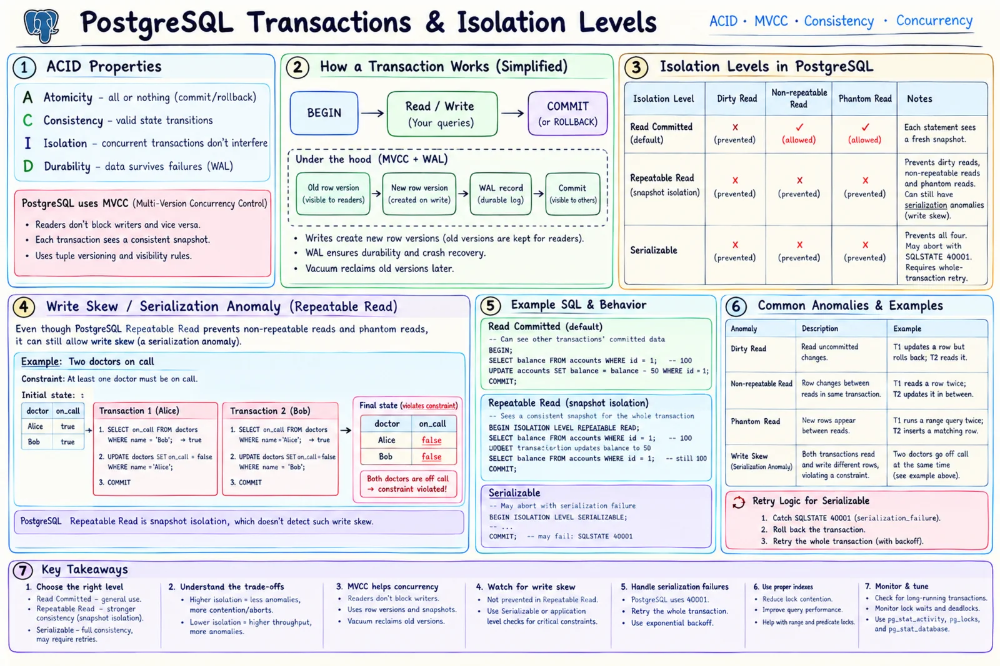

Topic · PostgreSQL
PostgreSQL Transactions, MVCC, and WAL
How PostgreSQL keeps concurrent writes correct and durable - and which isolation level or lock to reach for.


Quick Revision
- MVCC: updates create new row versions; readers see a snapshot.
- Long transactions block
VACUUM→ bloat. - Commit waits for local WAL flush, not replicas (unless sync standbys configured).
- Repeatable Read stops phantoms in PG but allows write skew; Serializable aborts with 40001.
- Known hot rows →
FOR UPDATE; rare conflicts → version check. - DB + Kafka aren't atomic → transactional outbox.
MVCC
- Transactions read a snapshot; an update writes a new row version while older snapshots still see the old one.
- Readers rarely block writers and vice versa; two writers on the same row still wait.
- Old versions become dead tuples;
VACUUMreclaims space and maintains visibility metadata. - Watch - idle-in-transaction sessions, autovacuum on high-churn tables, big updates creating far more disk/WAL than the final data.
| Command | Does |
|---|---|
VACUUM | Marks dead space reusable, updates visibility; doesn't shrink the file |
VACUUM FULL | Rewrites and compacts; strong lock, extra disk |
ANALYZE | Refreshes planner statistics |
WAL write path
transaction → modify shared buffers → append WAL → COMMIT waits for WAL durability → dirty pages flushed later → WAL also feeds replicas and point-in-time recovery
Crash recovery replays WAL; commits don't wait for data pages; streaming replication ships WAL; base backup + archived WAL = PITR. synchronous_commit = on guarantees local WAL flush only.
Isolation levels
| Level | Snapshot | Prevents | Still possible |
|---|---|---|---|
| Read Committed | Per statement | Dirty reads | Non-repeatable reads, phantoms, multi-statement races |
| Repeatable Read | Per transaction | + non-repeatable reads, phantoms (in PG) | Write skew; conflicting updates abort |
| Serializable | Serial-equivalent | All anomalies | Aborts with 40001 - retry |
Write skew: two transactions read the same snapshot, update different rows, both commit, and jointly break an invariant. Fix with Serializable, explicit locks, or a representation that forces a direct write conflict.
Locking patterns
-- pessimistic: known hot rows, frequent conflicts, short critical section BEGIN; SELECT balance FROM accounts WHERE id = $1 FOR UPDATE; UPDATE accounts SET balance = balance - $2 WHERE id = $1; COMMIT; -- optimistic: rare conflicts; 0 rows → reload/retry or 409 UPDATE products SET stock = stock - 1, version = version + 1 WHERE id = $1 AND stock > 0 AND version = $2; -- atomic conditional decrement UPDATE inventory SET available = available - 1 WHERE sku = $1 AND available > 0; -- serializable retry on SQLSTATE 40001: rollback → backoff → retry the WHOLE transaction
- Deadlocks - lock rows in a fixed order (e.g., ascending ID), keep transactions short, no network calls inside, index lock-producing statements, timeouts, retry the victim.
Outbox and idempotency
BEGIN; INSERT INTO orders (...); INSERT INTO outbox_events (event_id, aggregate_id, type, payload) VALUES ($event_id, $order_id, 'OrderCreated', $payload); COMMIT; -- worker publishes undelivered rows; consumers dedupe by event_id CREATE UNIQUE INDEX uq_payment_idempotency ON payments(idempotency_key);
Trade-offs
| Choice | Benefit | Cost |
|---|---|---|
| Read Committed | High concurrency, simple | Multi-statement races need care |
| Repeatable Read | Stable snapshot | Write skew remains |
| Serializable | Strongest | Aborts, retries, overhead |
| Pessimistic lock | Simple for hot rows | Blocking, deadlocks |
| Optimistic version | No waiting | Retry waste under contention |
| Outbox/CDC | Reliable decoupling | Eventual, more parts |
Failure modes
- Long idle transaction - blocks vacuum → timeouts, monitor transaction age.
- Bloat - dead tuples pile up → tune autovacuum, shorten transactions, rebuild only when measured.
- Autovacuum falls behind - transaction-ID risk → per-table tuning, more workers, less churn.
- Hot-row contention - atomic updates, sharded counters, serialize only the hot key.
- Lost update - conditional update, row lock, or version column.
- Deadlock - deterministic order, short transactions, retry.
- Serializable retry storm - backoff, bounded attempts, idempotency.
- External call in transaction - commit first, then outbox/compensation.
- DB row and Kafka diverge - outbox + idempotent consumer.
Interview practice
Answer aloud, then reveal.
Stop two buyers taking the last item?
Atomic conditional update or short FOR UPDATE; zero rows → fail. Idempotency for retries.
Why can Repeatable Read still break an invariant?
Write skew: same snapshot, different rows, both commit. Use Serializable, locks, or force a direct conflict.
Handle Serializable failures?
40001 is expected: rollback, back off, retry the entire transaction with an idempotency boundary.
What causes table bloat?
Updates/deletes leave dead tuples; long transactions, weak autovacuum, high churn, bad fill factor delay cleanup.
Does a commit wait for replicas?
Not by default - only local WAL flush, unless synchronous_standby_names is set.